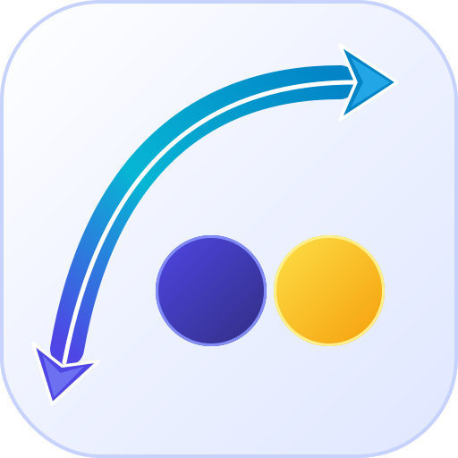

デザイナー推奨 • 片側矢頭 (単方向)

 64px
64px
 44px
44px
Single Stealth Head
左下の丸みを帯びた始点から、右上へと一本気配に駆け上がるダイナミックなアーク。視線誘導が自然で、右肩上がりの前進感。
32px
- 右肩上がりの前進感: 左下から右上へスムーズに視線が抜け、成長・効率化のストーリーが明快。
- 幾何学的調和: 左下のラウンドキャップが青い丸と美しくエコーし、まとまりが完璧。
- 極小視認性: 32px でも左下のラインが滑らかで、一切のノイズなし。
検討案 • 両端矢頭 (双方向)
 44px
44px
Dual Stealth Heads
右上と左下の両端に矢羽根ヘッドを配置。行と列を相互に転置・往復変換するという機能的意味合いをダイレクトに表現。

64px
32px
- 双方向の転置概念: 「A ⇄ B」「行 ⇄ 列」の相互変換という意味合いが伝わる。
- 視線の往復: 視線が両方向に引っ張り合い、下向きの矢印によりやや「下降感」が生じる。
- 極小視認性: 32px だと左下の角に要素が密集し、やや引っ掛かりが出る。